In this document we will demonstrate how to use the general-purpose block preconditioners implemented in oomph-lib. This tutorial follows from the Block Preconditioners tutorial, which provides an overview of oomph-lib's generic block preconditioning framework.
We use the Problem described in the Bending of a Cantilever Beam tutorial to illustrate the key concepts.
Introduction
In this section we define the four (distributed) general purpose block preconditioning methodologies. To recap, all oomph-lib problems are solved in a Newton iteration which requires the repeated solution of linear systems of the form
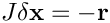
where 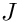 is the Jacobian matrix,  is the vector of residuals and
is the vector of residuals and  is the Newton correction. We divide the DOFs in the two-dimensional cantilever problem into two subsets corresponding to the
is the Newton correction. We divide the DOFs in the two-dimensional cantilever problem into two subsets corresponding to the  and
and  nodal positions.
nodal positions.
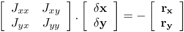
Utilising this partitioning we will describe four (distributed) general purpose block preconditioning methodologies. (Left) preconditioning represents a transformation of the original linear system to
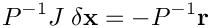
with the aim of accelerating the convergence of Krylov subspace iterative methods such as GMRES or CG. The application of the preconditioner requires the solution of
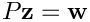
for  at each Krylov iteration.
at each Krylov iteration.
Block Diagonal Preconditioning
We drop the off-diagonal blocks to form the block diagonal preconditioner
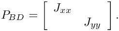
the application of this preconditioner requires the solution of the subsidiary systems 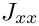 and 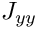.
Block Diagonal Preconditioning with Two-Level Parallelisation
The two-subsidiary systems in the block diagonal preconditioner (involving and ) can be solved in any order. In a parallel computation we can either solve the two systems one after the other using the full set of processes for the solution of each linear system. An alternative is to solve all the subsidiary systems simultaneously, using only a subset of processes for each system. We refer to this technique as two-level parallelisation and note that this approach is particularly useful if the linear solvers do not have good parallel scaling properties.
Upper Block Triangular Preconditioning
An alternative to block diagonal preconditioning is block triangular preconditioning in which only off diagonal blocks on one side of the diagonal are dropped. For example, in the block-upper triangular preconditioner
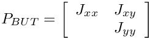
the block below the diagonal (  ) has been dropped. In addition to the two subsidiary solves for and this preconditioner requires a matrix-vector product involving 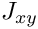.
) has been dropped. In addition to the two subsidiary solves for and this preconditioner requires a matrix-vector product involving 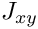.
Lower Block Triangular Preconditioning
Similarly we can define a lower triangular block preconditioner
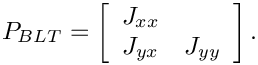
Application
In this section we demonstrate the use of oomph-lib's general-purpose block preconditioners. All general-purpose block preconditioners are derived from the base class GeneralPurposeBlockPreconditioner (which is itself derived from the BlockPreconditioner class).
By default all general purpose block preconditioners use SuperLUPreconditioner as the preconditioner for the subsidiary systems ( and in the Introduction). SuperLUPreconditioner is a wrapper to both the SuperLU direct solver and the SuperLU Dist distributed direct solver. Often we seek to replace this direct solver preconditioning with an inexact solver to make the preconditioner more efficient. To use an alternative subsidiary preconditioner we must define a function to return new instances of the chosen type of preconditioner (inexact solver). For example
would return instances of HyprePreconditioner, a wrapper to the distributed Hypre BoomerAMG implementation of classical AMG. Later we will pass a pointer to this function to the block preconditioner to enable the use of HyprePreconditioner as a subsidiary preconditioner. Note that the function only creates the subsidiary preconditioner – it will be deleted automatically by the master preconditioner when it is no longer required.
The rest of the section is concerned with the main function, and in particular setting up the preconditioner for use.
Given an instance of the problem,
we specify GMRES as the linear solver. If available, we use the TrilinosAztecOOSolver wrapper to the Trilinos AztecOO implementation of GMRES. (This is the only distributed implementation of GMRES in oomph-lib.)
GeneralPurposeBlockPreconditioner is the base class for all general purpose block preconditioners.
We introduced four general purpose block preconditioning methodologies in the Introduction. The next step is to construct one of these preconditioners.
- Block Diagonal Preconditioning. This is implemented in the class
BlockDiagonalPreconditioner.// Standard Block Diagonalprec_pt = new BlockDiagonalPreconditioner<CRDoubleMatrix>; - Enabling Two-Level Block Diagonal Preconditioning. By default two-level preconditioning is disabled and hence
enable_two_level_parallelisation()must have been called. Once this is done, each subsidiary system will be solved on an (as near to) equal size subset of processes.// Two Level Block Diagonalprec_pt = new BlockDiagonalPreconditioner<CRDoubleMatrix>;dynamic_cast<BlockDiagonalPreconditioner<CRDoubleMatrix>* >(prec_pt)->enable_two_level_parallelisation(); - Block Upper Triangular Preconditioning. Both block triangular preconditioners are implemented in the class
BlockTriangularPreconditioner. By default this employs the upper-triangular version of the preconditioner.// Block Upper Triangularprec_pt = new BlockTriangularPreconditioner<CRDoubleMatrix>; - Block Lower Triangular Preconditioning. The lower triangular version of the preconditioner can be selected with a call to the method
lower_triangular().// Block Lower Triangularprec_pt = new BlockTriangularPreconditioner<CRDoubleMatrix>;dynamic_cast<BlockTriangularPreconditioner<CRDoubleMatrix>* >(prec_pt)->lower_triangular();
Having chosen a preconditioner structure, the next stage is to choose the preconditioner for the subsidiary systems ( and in the Introduction ). By default this is SuperLUPreconditioner, but we wish to use HyprePreconditioner so we pass the previously specified function Hypre_Subsidiary_Preconditioner_Helper::get_hypre_preconditioner() to the preconditioner.
The same subsidiary preconditioner is used for all subsidiary systems in a general purpose block preconditioner.
As discussed in the Block Preconditioners tutorial, the classification of the DOFs is implemented at an elemental level so we pass a pointer to the mesh containing the elements to the preconditioner. (Note that this problem contains two meshes, one containing the bulk elements and one containing the FaceElements that apply the traction boundary condition. Since the latter do not introduce any new DOFs, all the DOFs are classified by the bulk elements. Therefore, we do not need to pass the traction element mesh to the block preconditioner.)
Finally, we pass the preconditioner to the solver
and solve the problem:
Parallelisation
Given that BlockPreconditioner, TrilinosAztecOOSolver, SuperLUPreconditioner, HyprePreconditioner and MatrixVectorProduct are all automatically distributed, all that is required for a distributed solution is to run the executable under MPI with multiple processes.
Source files for this tutorial
- The source files for the driver code are in
demo_drivers/mpi/solvers/
- The driver code is
demo_drivers/mpi/solvers/airy_cantilever.cc
PDF file
A pdf version of this document is available. \